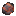
광석과 광물
광석과 광물
TerraFirmaCraft에서 광석과 광물들은 흔하지 않습니다. 바닐라와 다르게, 광석들은 탐색기로 찾을 수 있는 거대하지만 드문 광맥에서 찾을 수 있습니다. 각각의 광물마다 발견할 수 있는 암석 종류나 고도가 다릅니다. 따라서 원하는 광석을 찾기 위해서는 올바른 고도에서 올바른 암석의 종류를 찾는 것이 중요합니다.
In addition, some ores are Graded. Ore blocks may be Poor, Normal, or Rich, and different veins will have different concentrations of each type of block. Veins that are richer are more lucrative.
The next several pages show the different types of ores, what they look like, and where to find them.
자연동
Native Copper is an ore of Copper metal. It can be found in Igneous Extrusive rocks, at elevations above y=40.
It can also be found in deposits in rivers, which can be panned.
석영안산암 속의 자연동 광석.
자연금
Native Gold is an ore of Gold metal. It can be found at elevations below y=70, but deeper veins are larger and richer. It can be found in Igneous Extrusive and Igneous Intrusive rocks.
It can also be found in deposits in rivers, which can be panned.
섬록암 속의 자연금 광석
자연은
Native Silver is an ore of Silver metal. Small poor veins can be found in Granite or Diorite in uplift regions, above y=90. Larger and richer veins can be found in Granite, Diorite, Schist, and Gneiss deep underground below y=20.
It can also be found in deposits in rivers, which can be panned.
화강암 속의 자연은 광석.
사면동석
사면동석은 구리 광석입니다. 모든 고도에서 발견할 수 있지만, 깊은 광맥일수록 대체로 풍부합니다. 사면동석은 변성암에서 찾을 수 있습니다.
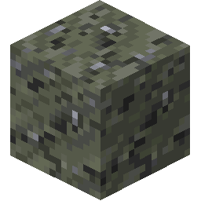편암 속의 사면동석 광석.
공작석
Malachite is an ore of Copper metal. It can be found primarily in Marble or Limestone, Chalk, and Dolomite. It can be found at most elevations, however deeper veins are often larger and richer.
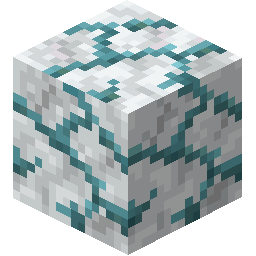대리암 속의 공작석 광석.
주석석
Cassiterite is an ore of Tin metal. It can be found in Igneous Intrusive rocks at high elevation, above y=80 in uplift regions or in dikes.
It can also be found in deposits in rivers, which can be panned.
섬록암 속의 주석석 광석.
휘창연석
Bismuthinite is an ore of Bismuth metal. It can be found in Sedimentary rocks near the surface, or larger and richer veins in Igneous Intrusive rocks deep underground.
멀티블록
셰일 속의 휘창연석 광석.
규니켈석
Garnierite is an ore of Nickel metal. It can be found at elevations below y=0. It can be found primarily in Gabbro deep underground. Smaller, rarer veins can also be found in any Igneous Intrusive rock.
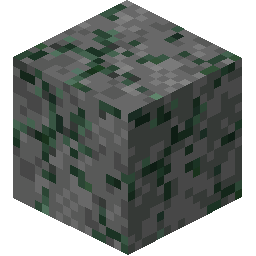반려암 속의 규니켈석 광석.
적철석
Hematite is an ore of Iron metal. It can be found in large veins in any Igneous Extrusive rocks near the surface.
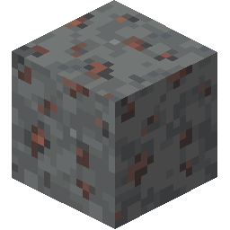안산암 속의 적철석 광석.
자철석
Magnetite is an ore of Iron metal. It can be found in large veins in any Sedimentary rocks near the surface.
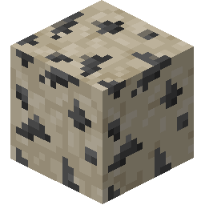석회암 속의 자철석 광석.
갈철석
Limonite is an ore of Iron metal. It can be found in large veins in any Sedimentary rocks near the surface.
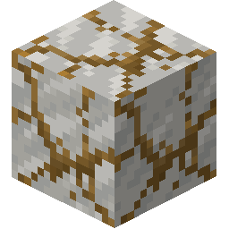백악 속의 갈철석 광석.
섬아연석
Sphalerite is an ore of Zinc metal. Small, poor veins can be found in Igneous Extrusive rocks near the surface, and large richer veins can be found in Igneous Intrusive rocks deep underground.
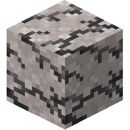규암 속의 섬아연석 광석.
갈탄
Lignite is a type of low-grade Coal ore. It can be found in very large flat deposits near the surface in Sedimentary rocks.
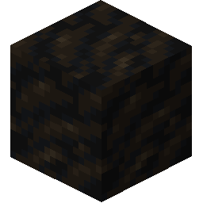백운암 속의 갈탄.
역청탄
Bituminous Coal is a type of mid-grade Coal ore. It can be found in very large flat deposits near the surface in Sedimentary rocks.
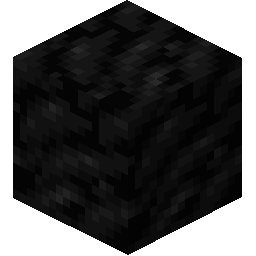각암 속의 역청탄.
고령석
Kaolinite is a soft Mineral which is used in the construction of Fire Clay. It can be found spawning at high altitudes in Plateaus, Old Mountains, and Highlands, at a temperature of at least 18°C, with a rainfall of at least 300mm.
멀티블록
Variants of kaolin clay.
흑연
Graphite is a Mineral which is used in the construction of Fire Clay. It can be found in Gneiss, Marble, Quartzite, and Schist rocks, in elevations below y=60.

편마암 속의 흑연.
진사
Cinnabar is a Mineral which can be ground in the Quern to obtain Redstone Dust. It can be found in veins deep underground, in Quartzite, Granite, Phyllite, and Schist.
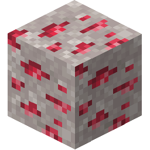규암 속의 진사.
빙정석
Cryolite is a Mineral which can be ground in the Quern to obtain Redstone Dust. It can be found in veins deep underground, in Granite, and Diorite.
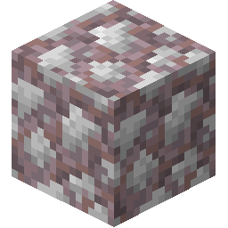화강암 속의 빙정석.
초석
Saltpeter is a Mineral which can be ground in the Quern, and then used in the crafting of Gunpowder. It can be found in very large flat deposits near the surface in Sedimentary rocks.
멀티블록
셰일 속의 초석.

황
Sulfur is a Mineral which can be ground in the Quern, and then used in the crafting of Gunpowder. It is found near lava level deep underground, in sparse but large and plentiful veins, in any Metamorphic or Igneous Intrusive rock.
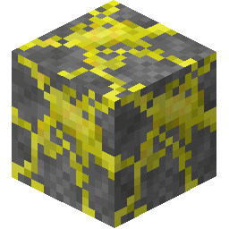Sulfur in Gabbro.
칼리암염
Sylvite is a Mineral which can be ground in the Quern, and then used as a Fertilizer. It can be found in very large flat deposits near the surface in Shale, Claystone and Chert.
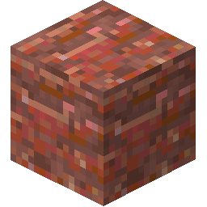각암 속의 칼리암염.
붕사
Borax is a Mineral which can be ground in the Quern to produce Flux. It can be found in very large flat deposits near the surface in Claystone, Limestone, and Shale.
멀티블록
셰일 속의 붕사.
석고
Gypsum is a decorative Mineral which can be used to make Alabaster. It can be found in very large flat deposits near the surface in Sedimentary rocks.
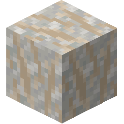Gypsum in Chalk.
암염
Halite is a Mineral which can be ground in the Quern to make Salt, which is an important Preservative. It can be found in very large flat deposits near the surface in Sedimentary rocks.
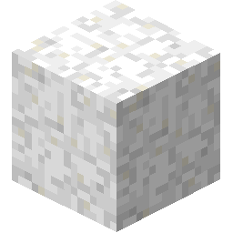백악 속의 암염.
에메랄드
에메랄드는 장식용 보석입니다. 꽤 예뻐 보이는데, 이 고독한 세상에서 누군가와 거래할 수 있을지는 모르겠네요...
에메랄드는 최대 60블록까지 수직적으로 광석이 생성됩니다. 심성암에서 찾을 수 있습니다.
섬록암 속의 에메랄드.

킴벌라이트
킴벌라이트는 귀중한 장식용 보석입니다. 킴벌라이트는 킴벌라이트 파이프라는 구조로 최대 60블록까지 수직적으로 광석이 생성됩니다. 유일하게 반려암에서만 찾을 수 있습니다.
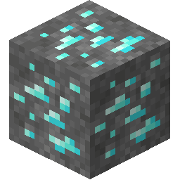반려암 속의 킴벌라이트.
청금석
Lapis Lazuli is a decorative Mineral which can be used to make Dye. It can be found in large, but sparse veins in Limestone and Marble, between y=-20 and y=80.
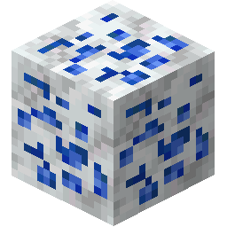Lapis Lazuli in Marble.
Amethyst
Amethyst is a decorative Mineral which can be used to make Dye and Glass. It can be found in Sedimentary) and Metamorphic rock beneath rivers above y=40.
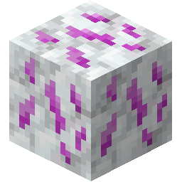Amethyst in Marble.

Opal
Opal is a decorative Mineral which can be used to make Dye. It can be found in Sedimentary) and Igneous Extrusive rock beneath rivers above y=40.
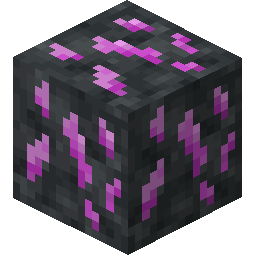Opal in Basalt.